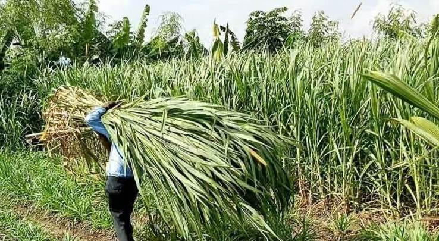
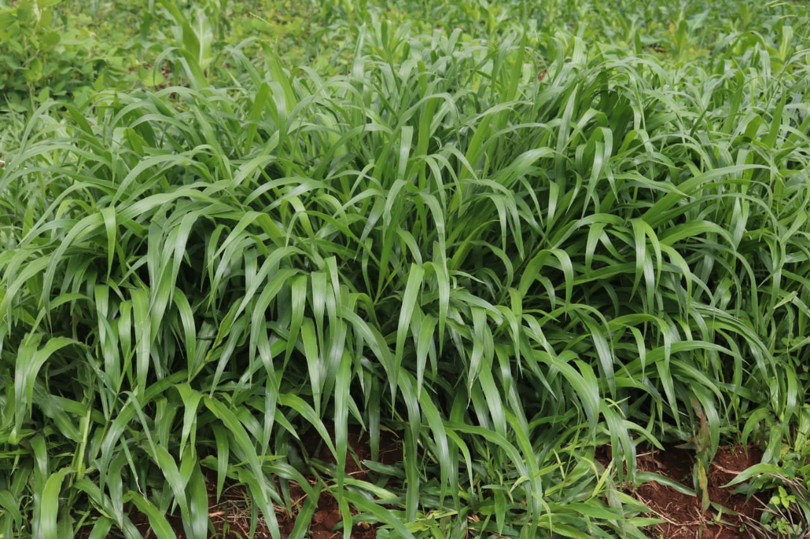
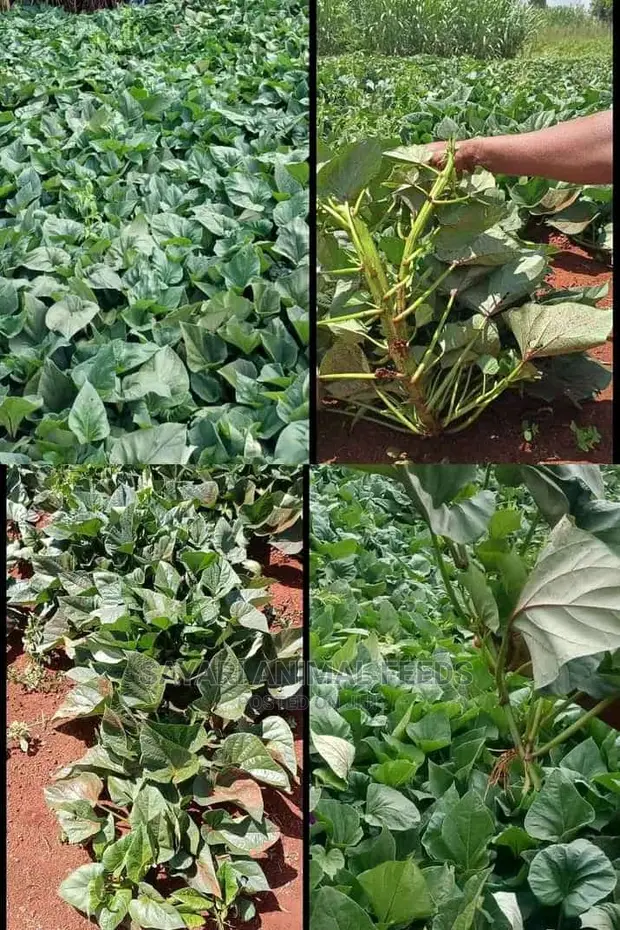

Our Premium Forage Collection
Scientifically proven varieties that transform Kenyan livestock farming

üëë KING OF GRASSES
üåü Super Napier Pakchong 1
The revolutionary Thai hybrid that's transforming Kenyan dairy farming since 2018
- 16-18% Crude Protein (vs 5-8% ordinary Napier)
- 200 tons per acre annually
- Supports 13-15 dairy cows per acre
- Drought tolerant & disease resistant
- Smooth, hairless leaves - easy handling
- Perfect for silage production (18% WSC)
- 7-8 harvests per year
ü•õ Proven Results: Marie Kihanya from Kinoo doubled her milk production from 10 to 20 liters daily!

üåç CLIMATE SMART
üí™ Brachiaria Grass
ILRI-recommended wonder grass, perfect for Kenya's varying climate conditions
- 14-17% Crude Protein content
- 30+ tons dry matter per hectare
- 15-40% increase in milk production
- Excellent drought tolerance (3-6 months)
- Thrives in poor soils
- Varieties: Basilisk, MG-4, Piata, Xaraes
- Carbon sequestration benefits
üèÜ Research Backed: Over 4000 farmers across Kenya have adopted Brachiaria with remarkable results!

üî• RELIABLE CHOICE
üü£ Purple Napier
The trusted backbone of Kenyan dairy farming - proven over decades
- 7-10% Crude Protein content
- Fast growth & high biomass production
- Excellent for cut-and-carry systems
- Multiple varieties: French Cameroon, Bana
- Good for soil conservation & erosion control
- Suitable for intercropping with legumes
- Cost-effective establishment
✅ Time-Tested: The foundation grass that built Kenya's dairy industry - reliable and affordable!

üåø DUAL PURPOSE
üç† Super Vines K
Premium sweet potato vines - feed your livestock and harvest tubers
- High protein & vitamin content
- Rich in essential minerals
- Fast regeneration after cutting
- Excellent livestock palatability
- Dual harvest: vines & sweet potatoes
- Thrives in various soil conditions
- Natural ground cover benefits
üí° Smart Choice: Get nutritious fodder AND harvest sweet potatoes for extra income!


.jpeg)
.jpeg)